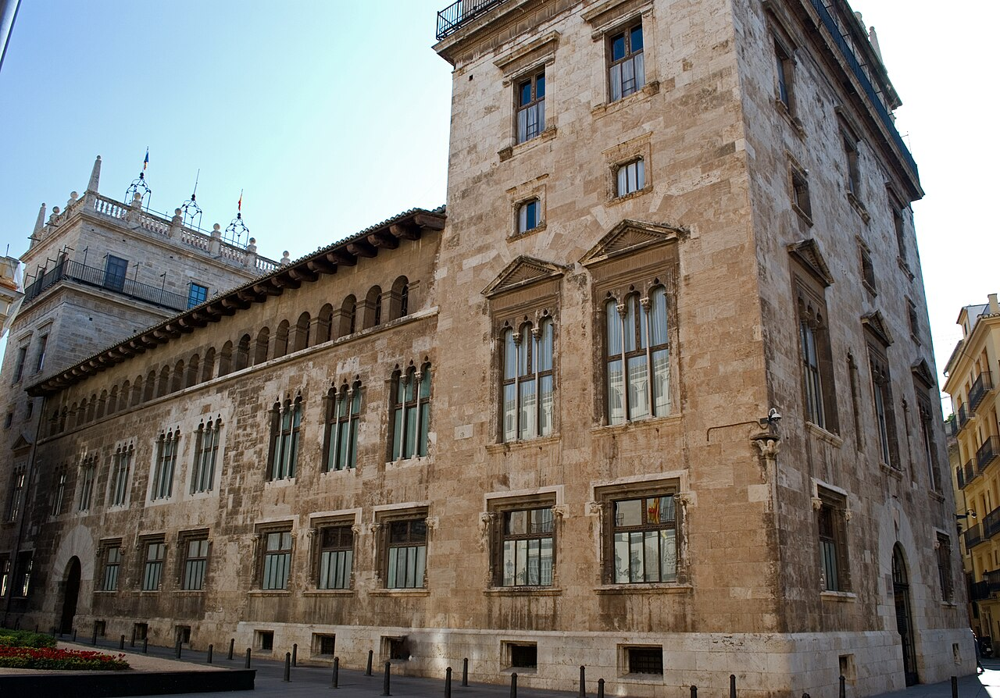

5 Planes este Fin de Semana en Valencia (2 al 4 de octubre de 2026): Mercados Medievales del 9 d'Octubre, Huerta y Albufera
Qué plan hacer en Valencia este fin de semana (del 2 al 4 de octubre de 2026): ambiente previo al 9 d'Octubre en el cauce del Turia, puertas abiertas en el Palau de la Generalitat, ruta por el Cabanyal y puesta de sol en la Albufera.

1. Puertas abiertas en los palacios históricos del Carmen por la semana del 9 d'Octubre (Gratis)
El primer fin de semana de octubre marca el inicio de la programación cultural del 9 d'Octubre en Valencia, una ocasión única del año para entrar gratis sin cita a los patios góticos, el Salón Dorado artesonado y los jardines del Palau de la Generalitat en pleno corazón de Ciutat Vella.
2. Mercado y paseo de mañana en bici bajo los puentes históricos del Jardín del Turia
Con 23 grados al mediodía, recorrer el antiguo cauce del río Turia entre naranjos, exposiciones al aire libre y puestos de artesanía del mercado de otoño frente al Puente de la Exposición es el plan matinal más agradable de este sábado y domingo.
3. Aperitivo marinero de clóchinas y vermut en las barracas modernistas de El Cabanyal
Acércate a mediodía a las calles de casas bajas recubiertas de azulejos policromados de El Cabanyal para tomar el aperitivo al sol en sus tabernas centenarias antes de caminar cinco minutos hasta el paseo de la Malvarrosa.
4. Tarde de arte inmersivo y restos del circo romano en el Palacio de Valeriola
Si te apetece un plan cultural diferente el sábado por la tarde, este palacio del siglo XVII rehabilitado esconde en su subsuelo un tramo del circo romano de Valentia y un horno medieval integrados con grandes instalaciones de arte contemporáneo.
5. Atardecer de octubre desde el embarcadero de madera de la Gola de Pujol en L'Albufera
En octubre el sol cae sobre las aguas tranquilas de L'Albufera hacia las 19:40 h tiñendo toda la laguna de tonos cobrizos y violetas sin el calor del verano. Puedes llegar directamente desde la calle Colón en el autobús urbano número 25.
Preguntas frecuentes
¿A qué hora se pone el sol en la Albufera de Valencia este primer fin de semana de octubre?
Del 2 al 4 de octubre el atardecer en la Albufera tiene lugar en torno a las 19:40 h; lo ideal es llegar al embarcadero de la Gola de Pujol o de El Palmar a las 18:45 h.
¿Qué planes gratis hay este fin de semana en Valencia centro?
Además de las jornadas de puertas abiertas en los palacios de la Generalitat por el 9 d'Octubre, los domingos por la mañana la entrada al Museo de Bellas Artes, la Lonja de la Seda y las Torres de Serranos es gratuita.